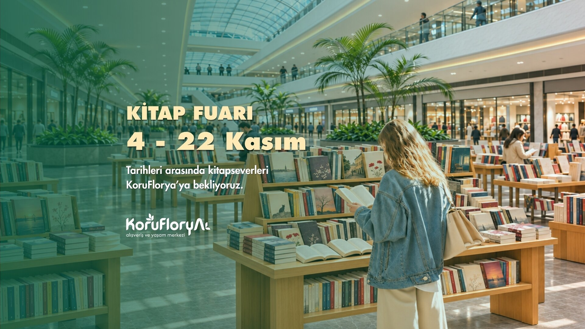

4 – 22 KASIM 2026
Kültür & Sanat Festivali
Koru Florya Kitap Fuarı
Türkiye’nin önde gelen yayınevleri, binlerce seçkin eser, imza günleri ve yazar söyleşileriyle Koru Katı’nda kitapseverleri bekliyor.
Koru Katı · Giriş Kat Atriyum · Ücretsiz Giriş
Fuar & Takvim Detayları